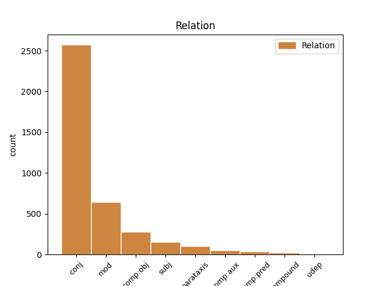
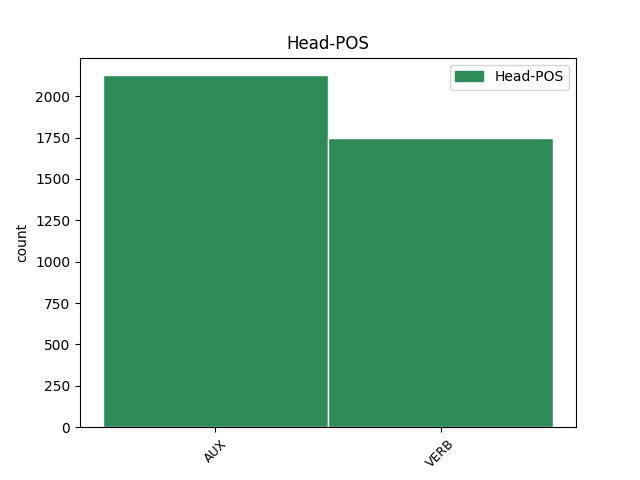
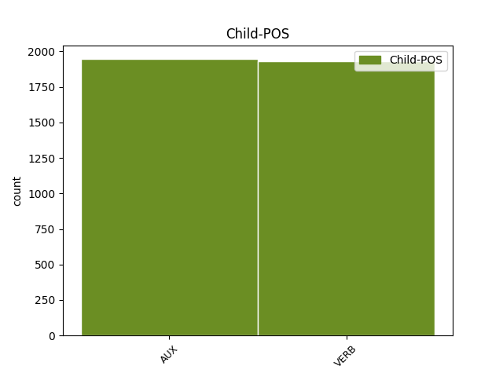

Distribution of features within this leaf



Agreement Rules sorted by frequency.
- When the dependent token is the conjunct(conj) of the head token,
1 Ana _ _ _ _ 0 _ _ _
2 Palacio _ _ _ _ 0 _ _ _
3 va anar AUX AUX Mood=Ind|Number=Sing|Person=3|Tense=Pres|VerbForm=Fin 0 _ _ _
4 qualificar _ _ _ _ 0 _ _ _
5 la _ _ _ _ 0 _ _ _
6 trobada _ _ _ _ 0 _ _ _
7 amb _ _ _ _ 0 _ _ _
8 Jack _ _ _ _ 0 _ _ _
9 Straw _ _ _ _ 0 _ _ _
10 de _ _ _ _ 0 _ _ _
11 " _ _ _ _ 0 _ _ _
12 molt _ _ _ _ 0 _ _ _
13 fructífera _ _ _ _ 0 _ _ _
14 " _ _ _ _ 0 _ _ _
15 , _ _ _ _ 0 _ _ _
16 i _ _ _ _ 0 _ _ _
17 va anar AUX AUX Mood=Ind|Number=Sing|Person=3|Tense=Pres|VerbForm=Fin 3 conj _ _
18 manifestar _ _ _ _ 0 _ _ _
19 que _ _ _ _ 0 _ _ _
20 havia _ _ _ _ 0 _ _ _
21 percebut _ _ _ _ 0 _ _ _
22 una _ _ _ _ 0 _ _ _
23 voluntat _ _ _ _ 0 _ _ _
24 política _ _ _ _ 0 _ _ _
25 britànica _ _ _ _ 0 _ _ _
26 per _ _ _ _ 0 _ _ _
27 arribar _ _ _ _ 0 _ _ _
28 a _ _ _ _ 0 _ _ _
29 un _ _ _ _ 0 _ _ _
30 acord _ _ _ _ 0 _ _ _
31 . _ _ _ _ 0 _ _ _
1 En _ _ _ _ 0 _ _ _
2 aquesta _ _ _ _ 0 _ _ _
3 ocasió _ _ _ _ 0 _ _ _
4 ho _ _ _ _ 0 _ _ _
5 farà fer VERB VERB Mood=Ind|Number=Sing|Person=3|Tense=Fut|VerbForm=Fin 0 _ _ _
6 davant _ _ _ _ 0 _ _ _
7 el _ _ _ _ 0 _ _ _
8 ministre _ _ _ _ 0 _ _ _
9 d' _ _ _ _ 0 _ _ _
10 Administracions _ _ _ _ 0 _ _ _
11 Públiques _ _ _ _ 0 _ _ _
12 , _ _ _ _ 0 _ _ _
13 Javier _ _ _ _ 0 _ _ _
14 Arenas _ _ _ _ 0 _ _ _
15 , _ _ _ _ 0 _ _ _
16 amb _ _ _ _ 0 _ _ _
17 qui _ _ _ _ 0 _ _ _
18 es _ _ _ _ 0 _ _ _
19 reunirà reunir VERB VERB Mood=Ind|Number=Sing|Person=3|Tense=Fut|VerbForm=Fin 5 mod _ _
20 dimecres _ _ _ _ 0 _ _ _
21 . _ _ _ _ 0 _ _ _
1 El _ _ _ _ 0 _ _ _
2 magistrat _ _ _ _ 0 _ _ _
3 afegeix _ _ _ _ 0 _ _ _
4 que _ _ _ _ 0 _ _ _
5 donar _ _ _ _ 0 _ _ _
6 suport _ _ _ _ 0 _ _ _
7 a _ _ _ _ 0 _ _ _
8 la _ _ _ _ 0 _ _ _
9 banda _ _ _ _ 0 _ _ _
10 criminal _ _ _ _ 0 _ _ _
11 també _ _ _ _ 0 _ _ _
12 constitueix _ _ _ _ 0 _ _ _
13 un _ _ _ _ 0 _ _ _
14 acte _ _ _ _ 0 _ _ _
15 de _ _ _ _ 0 _ _ _
16 terrorisme _ _ _ _ 0 _ _ _
17 : _ _ _ _ 0 _ _ _
18 " _ _ _ _ 0 _ _ _
19 Terrorista _ _ _ _ 0 _ _ _
20 serà ser AUX AUX Mood=Ind|Number=Sing|Person=3|Tense=Fut|VerbForm=Fin 0 _ _ _
21 no _ _ _ _ 0 _ _ _
22 solament _ _ _ _ 0 _ _ _
23 el _ _ _ _ 0 _ _ _
24 que _ _ _ _ 0 _ _ _
25 executa executar VERB VERB Mood=Ind|Number=Sing|Person=3|Tense=Pres|VerbForm=Fin 20 comp:obj _ _
26 aquests _ _ _ _ 0 _ _ _
27 actes _ _ _ _ 0 _ _ _
28 , _ _ _ _ 0 _ _ _
29 sinó _ _ _ _ 0 _ _ _
30 també _ _ _ _ 0 _ _ _
31 el _ _ _ _ 0 _ _ _
32 que _ _ _ _ 0 _ _ _
33 incita _ _ _ _ 0 _ _ _
34 , _ _ _ _ 0 _ _ _
35 dirigeix _ _ _ _ 0 _ _ _
36 , _ _ _ _ 0 _ _ _
37 finança _ _ _ _ 0 _ _ _
38 i _ _ _ _ 0 _ _ _
39 dóna _ _ _ _ 0 _ _ _
40 vida _ _ _ _ 0 _ _ _
41 a _ _ _ _ 0 _ _ _
42 tot _ _ _ _ 0 _ _ _
43 el _ _ _ _ 0 _ _ _
44 complex _ _ _ _ 0 _ _ _
45 organitzatiu _ _ _ _ 0 _ _ _
46 , _ _ _ _ 0 _ _ _
47 construint _ _ _ _ 0 _ _ _
48 l' _ _ _ _ 0 _ _ _
49 edifici _ _ _ _ 0 _ _ _
50 comú _ _ _ _ 0 _ _ _
51 de _ _ _ _ 0 _ _ _
52 la _ _ _ _ 0 _ _ _
53 violència _ _ _ _ 0 _ _ _
54 que _ _ _ _ 0 _ _ _
55 dóna _ _ _ _ 0 _ _ _
56 vida _ _ _ _ 0 _ _ _
57 al _ _ _ _ 0 _ _ _
58 grup _ _ _ _ 0 _ _ _
59 i _ _ _ _ 0 _ _ _
60 , _ _ _ _ 0 _ _ _
61 en _ _ _ _ 0 _ _ _
62 el _ _ _ _ 0 _ _ _
63 qual _ _ _ _ 0 _ _ _
64 , _ _ _ _ 0 _ _ _
65 naturalment _ _ _ _ 0 _ _ _
66 , _ _ _ _ 0 _ _ _
67 no _ _ _ _ 0 _ _ _
68 hi _ _ _ _ 0 _ _ _
69 ha _ _ _ _ 0 _ _ _
70 un _ _ _ _ 0 _ _ _
71 llibre _ _ _ _ 0 _ _ _
72 d' _ _ _ _ 0 _ _ _
73 associats _ _ _ _ 0 _ _ _
74 , _ _ _ _ 0 _ _ _
75 però _ _ _ _ 0 _ _ _
76 els _ _ _ _ 0 _ _ _
77 seus _ _ _ _ 0 _ _ _
78 escrits _ _ _ _ 0 _ _ _
79 , _ _ _ _ 0 _ _ _
80 autocrítiques _ _ _ _ 0 _ _ _
81 , _ _ _ _ 0 _ _ _
82 valoracions _ _ _ _ 0 _ _ _
83 , _ _ _ _ 0 _ _ _
84 publicacions _ _ _ _ 0 _ _ _
85 , _ _ _ _ 0 _ _ _
86 pamflets _ _ _ _ 0 _ _ _
87 , _ _ _ _ 0 _ _ _
88 ponències _ _ _ _ 0 _ _ _
89 o _ _ _ _ 0 _ _ _
90 comunicats _ _ _ _ 0 _ _ _
91 deixen _ _ _ _ 0 _ _ _
92 traslluir _ _ _ _ 0 _ _ _
93 quins _ _ _ _ 0 _ _ _
94 són _ _ _ _ 0 _ _ _
95 els _ _ _ _ 0 _ _ _
96 fonaments _ _ _ _ 0 _ _ _
97 i _ _ _ _ 0 _ _ _
98 els _ _ _ _ 0 _ _ _
99 materials _ _ _ _ 0 _ _ _
100 que _ _ _ _ 0 _ _ _
101 han _ _ _ _ 0 _ _ _
102 alimentat _ _ _ _ 0 _ _ _
103 el _ _ _ _ 0 _ _ _
104 naixement _ _ _ _ 0 _ _ _
105 , _ _ _ _ 0 _ _ _
106 desenvolupament _ _ _ _ 0 _ _ _
107 i _ _ _ _ 0 _ _ _
108 sosteniment _ _ _ _ 0 _ _ _
109 del _ _ _ _ 0 _ _ _
110 grup _ _ _ _ 0 _ _ _
111 en _ _ _ _ 0 _ _ _
112 tota _ _ _ _ 0 _ _ _
113 la _ _ _ _ 0 _ _ _
114 seva _ _ _ _ 0 _ _ _
115 extensió _ _ _ _ 0 _ _ _
116 " _ _ _ _ 0 _ _ _
117 . _ _ _ _ 0 _ _ _
1 Segons _ _ _ _ 0 _ _ _
2 l' _ _ _ _ 0 _ _ _
3 opinió _ _ _ _ 0 _ _ _
4 de _ _ _ _ 0 _ _ _
5 García _ _ _ _ 0 _ _ _
6 Escudero _ _ _ _ 0 _ _ _
7 , _ _ _ _ 0 _ _ _
8 els _ _ _ _ 0 _ _ _
9 socialistes _ _ _ _ 0 _ _ _
10 " _ _ _ _ 0 _ _ _
11 no _ _ _ _ 0 _ _ _
12 l' _ _ _ _ 0 _ _ _
13 haurien _ _ _ _ 0 _ _ _
14 de _ _ _ _ 0 _ _ _
15 veure _ _ _ _ 0 _ _ _
16 malament _ _ _ _ 0 _ _ _
17 " _ _ _ _ 0 _ _ _
18 ja _ _ _ _ 0 _ _ _
19 que _ _ _ _ 0 _ _ _
20 , _ _ _ _ 0 _ _ _
21 va _ _ _ _ 0 _ _ _
22 assegurar _ _ _ _ 0 _ _ _
23 , _ _ _ _ 0 _ _ _
24 " _ _ _ _ 0 _ _ _
25 al _ _ _ _ 0 _ _ _
26 cap _ _ _ _ 0 _ _ _
27 i _ _ _ _ 0 _ _ _
28 a _ _ _ _ 0 _ _ _
29 la _ _ _ _ 0 _ _ _
30 fi _ _ _ _ 0 _ _ _
31 , _ _ _ _ 0 _ _ _
32 el _ _ _ _ 0 _ _ _
33 que _ _ _ _ 0 _ _ _
34 està estar AUX AUX Mood=Ind|Number=Sing|Person=3|Tense=Pres|VerbForm=Fin 36 subj _ _
35 buscant _ _ _ _ 0 _ _ _
36 és ser AUX AUX Mood=Ind|Number=Sing|Person=3|Tense=Pres|VerbForm=Fin 0 _ _ _
37 l' _ _ _ _ 0 _ _ _
38 eficàcia _ _ _ _ 0 _ _ _
39 en _ _ _ _ 0 _ _ _
40 la _ _ _ _ 0 _ _ _
41 gestió _ _ _ _ 0 _ _ _
42 i _ _ _ _ 0 _ _ _
43 conjugar _ _ _ _ 0 _ _ _
44 d' _ _ _ _ 0 _ _ _
45 una _ _ _ _ 0 _ _ _
46 millor _ _ _ _ 0 _ _ _
47 manera _ _ _ _ 0 _ _ _
48 el _ _ _ _ 0 _ _ _
49 que _ _ _ _ 0 _ _ _
50 és _ _ _ _ 0 _ _ _
51 la _ _ _ _ 0 _ _ _
52 directriu _ _ _ _ 0 _ _ _
53 política _ _ _ _ 0 _ _ _
54 amb _ _ _ _ 0 _ _ _
55 la _ _ _ _ 0 _ _ _
56 gestió _ _ _ _ 0 _ _ _
57 més _ _ _ _ 0 _ _ _
58 tècnica _ _ _ _ 0 _ _ _
59 " _ _ _ _ 0 _ _ _
60 . _ _ _ _ 0 _ _ _
1 Segons _ _ _ _ 0 _ _ _
2 l' _ _ _ _ 0 _ _ _
3 opinió _ _ _ _ 0 _ _ _
4 de _ _ _ _ 0 _ _ _
5 García _ _ _ _ 0 _ _ _
6 Escudero _ _ _ _ 0 _ _ _
7 , _ _ _ _ 0 _ _ _
8 els _ _ _ _ 0 _ _ _
9 socialistes _ _ _ _ 0 _ _ _
10 " _ _ _ _ 0 _ _ _
11 no _ _ _ _ 0 _ _ _
12 l' _ _ _ _ 0 _ _ _
13 haurien _ _ _ _ 0 _ _ _
14 de _ _ _ _ 0 _ _ _
15 veure _ _ _ _ 0 _ _ _
16 malament _ _ _ _ 0 _ _ _
17 " _ _ _ _ 0 _ _ _
18 ja _ _ _ _ 0 _ _ _
19 que _ _ _ _ 0 _ _ _
20 , _ _ _ _ 0 _ _ _
21 va anar AUX AUX Mood=Ind|Number=Sing|Person=3|Tense=Pres|VerbForm=Fin 36 parataxis _ _
22 assegurar _ _ _ _ 0 _ _ _
23 , _ _ _ _ 0 _ _ _
24 " _ _ _ _ 0 _ _ _
25 al _ _ _ _ 0 _ _ _
26 cap _ _ _ _ 0 _ _ _
27 i _ _ _ _ 0 _ _ _
28 a _ _ _ _ 0 _ _ _
29 la _ _ _ _ 0 _ _ _
30 fi _ _ _ _ 0 _ _ _
31 , _ _ _ _ 0 _ _ _
32 el _ _ _ _ 0 _ _ _
33 que _ _ _ _ 0 _ _ _
34 està _ _ _ _ 0 _ _ _
35 buscant _ _ _ _ 0 _ _ _
36 és ser AUX AUX Mood=Ind|Number=Sing|Person=3|Tense=Pres|VerbForm=Fin 0 _ _ _
37 l' _ _ _ _ 0 _ _ _
38 eficàcia _ _ _ _ 0 _ _ _
39 en _ _ _ _ 0 _ _ _
40 la _ _ _ _ 0 _ _ _
41 gestió _ _ _ _ 0 _ _ _
42 i _ _ _ _ 0 _ _ _
43 conjugar _ _ _ _ 0 _ _ _
44 d' _ _ _ _ 0 _ _ _
45 una _ _ _ _ 0 _ _ _
46 millor _ _ _ _ 0 _ _ _
47 manera _ _ _ _ 0 _ _ _
48 el _ _ _ _ 0 _ _ _
49 que _ _ _ _ 0 _ _ _
50 és _ _ _ _ 0 _ _ _
51 la _ _ _ _ 0 _ _ _
52 directriu _ _ _ _ 0 _ _ _
53 política _ _ _ _ 0 _ _ _
54 amb _ _ _ _ 0 _ _ _
55 la _ _ _ _ 0 _ _ _
56 gestió _ _ _ _ 0 _ _ _
57 més _ _ _ _ 0 _ _ _
58 tècnica _ _ _ _ 0 _ _ _
59 " _ _ _ _ 0 _ _ _
60 . _ _ _ _ 0 _ _ _
1 El _ _ _ _ 0 _ _ _
2 dirigent _ _ _ _ 0 _ _ _
3 conservador _ _ _ _ 0 _ _ _
4 va _ _ _ _ 0 _ _ _
5 fer _ _ _ _ 0 _ _ _
6 una _ _ _ _ 0 _ _ _
7 crida _ _ _ _ 0 _ _ _
8 al _ _ _ _ 0 _ _ _
9 PSOE _ _ _ _ 0 _ _ _
10 perquè _ _ _ _ 0 _ _ _
11 doni donar VERB VERB Mood=Sub|Number=Sing|Person=3|Tense=Pres|VerbForm=Fin 14 comp:aux _ _
12 el _ _ _ _ 0 _ _ _
13 seu _ _ _ _ 0 _ _ _
14 suport suport AUX AUX Mood=Sub|Number=Sing|Person=3|Tense=Pres|VerbForm=Fin 0 _ _ _
15 a _ _ _ _ 0 _ _ _
16 la _ _ _ _ 0 _ _ _
17 proposta _ _ _ _ 0 _ _ _
18 , _ _ _ _ 0 _ _ _
19 que _ _ _ _ 0 _ _ _
20 tirarà _ _ _ _ 0 _ _ _
21 endavant _ _ _ _ 0 _ _ _
22 gràcies _ _ _ _ 0 _ _ _
23 a _ _ _ _ 0 _ _ _
24 la _ _ _ _ 0 _ _ _
25 majoria _ _ _ _ 0 _ _ _
26 absoluta _ _ _ _ 0 _ _ _
27 del _ _ _ _ 0 _ _ _
28 PP _ _ _ _ 0 _ _ _
29 . _ _ _ _ 0 _ _ _
1 La _ _ _ _ 0 _ _ _
2 comissió _ _ _ _ 0 _ _ _
3 de _ _ _ _ 0 _ _ _
4 govern _ _ _ _ 0 _ _ _
5 de _ _ _ _ 0 _ _ _
6 l' _ _ _ _ 0 _ _ _
7 Ajuntament _ _ _ _ 0 _ _ _
8 de _ _ _ _ 0 _ _ _
9 Barcelona _ _ _ _ 0 _ _ _
10 va _ _ _ _ 0 _ _ _
11 donar _ _ _ _ 0 _ _ _
12 llum _ _ _ _ 0 _ _ _
13 verda _ _ _ _ 0 _ _ _
14 ahir _ _ _ _ 0 _ _ _
15 al _ _ _ _ 0 _ _ _
16 pla _ _ _ _ 0 _ _ _
17 director _ _ _ _ 0 _ _ _
18 de _ _ _ _ 0 _ _ _
19 la _ _ _ _ 0 _ _ _
20 Vall _ _ _ _ 0 _ _ _
21 d' _ _ _ _ 0 _ _ _
22 Hebron _ _ _ _ 0 _ _ _
23 , _ _ _ _ 0 _ _ _
24 un _ _ _ _ 0 _ _ _
25 document _ _ _ _ 0 _ _ _
26 que _ _ _ _ 0 _ _ _
27 defineix definir VERB VERB Mood=Ind|Number=Sing|Person=3|Tense=Pres|VerbForm=Fin 0 _ _ _
28 a _ _ _ _ 0 _ _ _
29 grans _ _ _ _ 0 _ _ _
30 trets _ _ _ _ 0 _ _ _
31 quin _ _ _ _ 0 _ _ _
32 haurà haver AUX AUX Mood=Ind|Number=Sing|Person=3|Tense=Fut|VerbForm=Fin 27 comp:pred _ _
33 de _ _ _ _ 0 _ _ _
34 ser _ _ _ _ 0 _ _ _
35 el _ _ _ _ 0 _ _ _
36 futur _ _ _ _ 0 _ _ _
37 desenvolupament _ _ _ _ 0 _ _ _
38 urbanístic _ _ _ _ 0 _ _ _
39 d' _ _ _ _ 0 _ _ _
40 una _ _ _ _ 0 _ _ _
41 zona _ _ _ _ 0 _ _ _
42 de _ _ _ _ 0 _ _ _
43 la _ _ _ _ 0 _ _ _
44 ciutat _ _ _ _ 0 _ _ _
45 que _ _ _ _ 0 _ _ _
46 , _ _ _ _ 0 _ _ _
47 en _ _ _ _ 0 _ _ _
48 paraules _ _ _ _ 0 _ _ _
49 de _ _ _ _ 0 _ _ _
50 la _ _ _ _ 0 _ _ _
51 regidora _ _ _ _ 0 _ _ _
52 del _ _ _ _ 0 _ _ _
53 districte _ _ _ _ 0 _ _ _
54 d' _ _ _ _ 0 _ _ _
55 Horta-Guinardó _ _ _ _ 0 _ _ _
56 , _ _ _ _ 0 _ _ _
57 Imma _ _ _ _ 0 _ _ _
58 Moraleda _ _ _ _ 0 _ _ _
59 , _ _ _ _ 0 _ _ _
60 " _ _ _ _ 0 _ _ _
61 està _ _ _ _ 0 _ _ _
62 sense _ _ _ _ 0 _ _ _
63 acabar _ _ _ _ 0 _ _ _
64 " _ _ _ _ 0 _ _ _
65 . _ _ _ _ 0 _ _ _
1 L' _ _ _ _ 0 _ _ _
2 estudi _ _ _ _ 0 _ _ _
3 també _ _ _ _ 0 _ _ _
4 revela _ _ _ _ 0 _ _ _
5 que _ _ _ _ 0 _ _ _
6 on _ _ _ _ 0 _ _ _
7 els _ _ _ _ 0 _ _ _
8 conductors _ _ _ _ 0 _ _ _
9 fan fer VERB VERB Mood=Ind|Number=Plur|Person=3|Tense=Pres|VerbForm=Fin 0 _ _ _
10 servir servir VERB VERB Mood=Ind|Number=Plur|Person=3|Tense=Pres|VerbForm=Fin 9 compound _ _
11 més _ _ _ _ 0 _ _ _
12 el _ _ _ _ 0 _ _ _
13 mòbil _ _ _ _ 0 _ _ _
14 és _ _ _ _ 0 _ _ _
15 en _ _ _ _ 0 _ _ _
16 les _ _ _ _ 0 _ _ _
17 vies _ _ _ _ 0 _ _ _
18 urbanes _ _ _ _ 0 _ _ _
19 i _ _ _ _ 0 _ _ _
20 en _ _ _ _ 0 _ _ _
21 menor _ _ _ _ 0 _ _ _
22 grau _ _ _ _ 0 _ _ _
23 en _ _ _ _ 0 _ _ _
24 les _ _ _ _ 0 _ _ _
25 carreteres _ _ _ _ 0 _ _ _
26 i _ _ _ _ 0 _ _ _
27 en _ _ _ _ 0 _ _ _
28 les _ _ _ _ 0 _ _ _
29 autovies _ _ _ _ 0 _ _ _
30 o _ _ _ _ 0 _ _ _
31 autopistes _ _ _ _ 0 _ _ _
32 . _ _ _ _ 0 _ _ _
1 Coronas _ _ _ _ 0 _ _ _
2 , _ _ _ _ 0 _ _ _
3 que _ _ _ _ 0 _ _ _
4 no _ _ _ _ 0 _ _ _
5 repeteix _ _ _ _ 0 _ _ _
6 com _ _ _ _ 0 _ _ _
7 a _ _ _ _ 0 _ _ _
8 candidat _ _ _ _ 0 _ _ _
9 a _ _ _ _ 0 _ _ _
10 la _ _ _ _ 0 _ _ _
11 llista _ _ _ _ 0 _ _ _
12 a _ _ _ _ 0 _ _ _
13 les _ _ _ _ 0 _ _ _
14 Corts _ _ _ _ 0 _ _ _
15 de _ _ _ _ 0 _ _ _
16 Castella _ _ _ _ 0 _ _ _
17 i _ _ _ _ 0 _ _ _
18 Lleó _ _ _ _ 0 _ _ _
19 , _ _ _ _ 0 _ _ _
20 encara _ _ _ _ 0 _ _ _
21 que _ _ _ _ 0 _ _ _
22 sí _ _ _ _ 0 _ _ _
23 que _ _ _ _ 0 _ _ _
24 ho _ _ _ _ 0 _ _ _
25 fa fer VERB VERB Mood=Ind|Number=Sing|Person=3|Tense=Pres|VerbForm=Fin 0 _ _ _
26 a _ _ _ _ 0 _ _ _
27 l' _ _ _ _ 0 _ _ _
28 alcaldia _ _ _ _ 0 _ _ _
29 en _ _ _ _ 0 _ _ _
30 la _ _ _ _ 0 _ _ _
31 qual _ _ _ _ 0 _ _ _
32 ha haver AUX AUX Mood=Ind|Number=Sing|Person=3|Tense=Pres|VerbForm=Fin 25 udep _ _
33 estat _ _ _ _ 0 _ _ _
34 16 _ _ _ _ 0 _ _ _
35 anys _ _ _ _ 0 _ _ _
36 , _ _ _ _ 0 _ _ _
37 va _ _ _ _ 0 _ _ _
38 dir _ _ _ _ 0 _ _ _
39 a _ _ _ _ 0 _ _ _
40 aquest _ _ _ _ 0 _ _ _
41 diari _ _ _ _ 0 _ _ _
42 que _ _ _ _ 0 _ _ _
43 aquesta _ _ _ _ 0 _ _ _
44 temporada _ _ _ _ 0 _ _ _
45 ha _ _ _ _ 0 _ _ _
46 sembrat _ _ _ _ 0 _ _ _
47 unes _ _ _ _ 0 _ _ _
48 55 _ _ _ _ 0 _ _ _
49 hectàrees _ _ _ _ 0 _ _ _
50 i _ _ _ _ 0 _ _ _
51 que _ _ _ _ 0 _ _ _
52 treballa _ _ _ _ 0 _ _ _
53 la _ _ _ _ 0 _ _ _
54 terra _ _ _ _ 0 _ _ _
55 amb _ _ _ _ 0 _ _ _
56 els _ _ _ _ 0 _ _ _
57 seus _ _ _ _ 0 _ _ _
58 dos _ _ _ _ 0 _ _ _
59 fills _ _ _ _ 0 _ _ _
60 . _ _ _ _ 0 _ _ _
Disagree Examples:
1 Segons _ _ _ _ 0 _ _ _
2 l' _ _ _ _ 0 _ _ _
3 alcalde _ _ _ _ 0 _ _ _
4 de _ _ _ _ 0 _ _ _
5 Súria _ _ _ _ 0 _ _ _
6 , _ _ _ _ 0 _ _ _
7 Antoni _ _ _ _ 0 _ _ _
8 Julián _ _ _ _ 0 _ _ _
9 , _ _ _ _ 0 _ _ _
10 no _ _ _ _ 0 _ _ _
11 és _ _ _ _ 0 _ _ _
12 normal _ _ _ _ 0 _ _ _
13 que _ _ _ _ 0 _ _ _
14 fins _ _ _ _ 0 _ _ _
15 ara _ _ _ _ 0 _ _ _
16 no _ _ _ _ 0 _ _ _
17 s' _ _ _ _ 0 _ _ _
18 hagin haver AUX AUX Mood=Sub|Number=Plur|Person=3|Tense=Pres|VerbForm=Fin 0 _ _ _
19 donat _ _ _ _ 0 _ _ _
20 a _ _ _ _ 0 _ _ _
21 conèixer _ _ _ _ 0 _ _ _
22 quins _ _ _ _ 0 _ _ _
23 compromisos _ _ _ _ 0 _ _ _
24 va anar AUX AUX Mood=Ind|Number=Sing|Person=3|Tense=Pres|VerbForm=Fin 18 subj _ _
25 adquirir _ _ _ _ 0 _ _ _
26 l' _ _ _ _ 0 _ _ _
27 empresa _ _ _ _ 0 _ _ _
28 a _ _ _ _ 0 _ _ _
29 l' _ _ _ _ 0 _ _ _
30 hora _ _ _ _ 0 _ _ _
31 de _ _ _ _ 0 _ _ _
32 comprar _ _ _ _ 0 _ _ _
33 una _ _ _ _ 0 _ _ _
34 propietat _ _ _ _ 0 _ _ _
35 pública _ _ _ _ 0 _ _ _
36 . _ _ _ _ 0 _ _ _
1 El _ _ _ _ 0 _ _ _
2 treballador _ _ _ _ 0 _ _ _
3 va _ _ _ _ 0 _ _ _
4 ser _ _ _ _ 0 _ _ _
5 acomiadat _ _ _ _ 0 _ _ _
6 el _ _ _ _ 0 _ _ _
7 desembre _ _ _ _ 0 _ _ _
8 de _ _ _ _ 0 _ _ _
9 1999 _ _ _ _ 0 _ _ _
10 després _ _ _ _ 0 _ _ _
11 que _ _ _ _ 0 _ _ _
12 els _ _ _ _ 0 _ _ _
13 seus _ _ _ _ 0 _ _ _
14 caps _ _ _ _ 0 _ _ _
15 li _ _ _ _ 0 _ _ _
16 van anar AUX AUX Mood=Ind|Number=Plur|Person=3|Tense=Pres|VerbForm=Fin 0 _ _ _
17 interceptar _ _ _ _ 0 _ _ _
18 fins _ _ _ _ 0 _ _ _
19 a _ _ _ _ 0 _ _ _
20 140 _ _ _ _ 0 _ _ _
21 mails _ _ _ _ 0 _ _ _
22 del _ _ _ _ 0 _ _ _
23 seu _ _ _ _ 0 _ _ _
24 correu _ _ _ _ 0 _ _ _
25 informàtic _ _ _ _ 0 _ _ _
26 personal _ _ _ _ 0 _ _ _
27 en _ _ _ _ 0 _ _ _
28 dos _ _ _ _ 0 _ _ _
29 mesos _ _ _ _ 0 _ _ _
30 i _ _ _ _ 0 _ _ _
31 l' _ _ _ _ 0 _ _ _
32 acusessin acusar VERB VERB Mood=Sub|Number=Plur|Person=3|Tense=Imp|VerbForm=Fin 16 conj _ _
33 d' _ _ _ _ 0 _ _ _
34 utilitzar _ _ _ _ 0 _ _ _
35 la _ _ _ _ 0 _ _ _
36 bústia _ _ _ _ 0 _ _ _
37 de _ _ _ _ 0 _ _ _
38 la _ _ _ _ 0 _ _ _
39 feina _ _ _ _ 0 _ _ _
40 per _ _ _ _ 0 _ _ _
41 a _ _ _ _ 0 _ _ _
42 fins _ _ _ _ 0 _ _ _
43 personals _ _ _ _ 0 _ _ _
44 i _ _ _ _ 0 _ _ _
45 no _ _ _ _ 0 _ _ _
46 laborals _ _ _ _ 0 _ _ _
47 . _ _ _ _ 0 _ _ _
1 La _ _ _ _ 0 _ _ _
2 previsió _ _ _ _ 0 _ _ _
3 a _ _ _ _ 0 _ _ _
4 mig _ _ _ _ 0 _ _ _
5 termini _ _ _ _ 0 _ _ _
6 és ser VERB VERB Mood=Ind|Number=Sing|Person=3|Tense=Pres|VerbForm=Fin 0 _ _ _
7 invertir _ _ _ _ 0 _ _ _
8 2.900 _ _ _ _ 0 _ _ _
9 milions _ _ _ _ 0 _ _ _
10 de _ _ _ _ 0 _ _ _
11 pessetes _ _ _ _ 0 _ _ _
12 en _ _ _ _ 0 _ _ _
13 la _ _ _ _ 0 _ _ _
14 instal·lació _ _ _ _ 0 _ _ _
15 de _ _ _ _ 0 _ _ _
16 dues _ _ _ _ 0 _ _ _
17 línies _ _ _ _ 0 _ _ _
18 més _ _ _ _ 0 _ _ _
19 , _ _ _ _ 0 _ _ _
20 amb _ _ _ _ 0 _ _ _
21 la _ _ _ _ 0 _ _ _
22 qual _ _ _ _ 0 _ _ _
23 cosa _ _ _ _ 0 _ _ _
24 es _ _ _ _ 0 _ _ _
25 podria poder AUX AUX Mood=Cnd|Number=Sing|Person=3|VerbForm=Fin 6 mod _ _
26 arribar _ _ _ _ 0 _ _ _
27 a _ _ _ _ 0 _ _ _
28 les _ _ _ _ 0 _ _ _
29 20.000 _ _ _ _ 0 _ _ _
30 tones _ _ _ _ 0 _ _ _
31 de _ _ _ _ 0 _ _ _
32 pa _ _ _ _ 0 _ _ _
33 precuinat _ _ _ _ 0 _ _ _
34 a _ _ _ _ 0 _ _ _
35 l' _ _ _ _ 0 _ _ _
36 any _ _ _ _ 0 _ _ _
37 . _ _ _ _ 0 _ _ _
1 El _ _ _ _ 0 _ _ _
2 Ministeri _ _ _ _ 0 _ _ _
3 de _ _ _ _ 0 _ _ _
4 Medi _ _ _ _ 0 _ _ _
5 Ambient _ _ _ _ 0 _ _ _
6 estableix _ _ _ _ 0 _ _ _
7 que _ _ _ _ 0 _ _ _
8 el _ _ _ _ 0 _ _ _
9 preu _ _ _ _ 0 _ _ _
10 de _ _ _ _ 0 _ _ _
11 cada _ _ _ _ 0 _ _ _
12 metre _ _ _ _ 0 _ _ _
13 cúbic _ _ _ _ 0 _ _ _
14 de _ _ _ _ 0 _ _ _
15 l' _ _ _ _ 0 _ _ _
16 Ebre _ _ _ _ 0 _ _ _
17 suposarà suposar VERB VERB Mood=Ind|Number=Sing|Person=3|Tense=Fut|VerbForm=Fin 0 _ _ _
18 un _ _ _ _ 0 _ _ _
19 cost _ _ _ _ 0 _ _ _
20 de _ _ _ _ 0 _ _ _
21 0,3 _ _ _ _ 0 _ _ _
22 euros _ _ _ _ 0 _ _ _
23 per _ _ _ _ 0 _ _ _
24 les _ _ _ _ 0 _ _ _
25 conques _ _ _ _ 0 _ _ _
26 receptores _ _ _ _ 0 _ _ _
27 , _ _ _ _ 0 _ _ _
28 mentre _ _ _ _ 0 _ _ _
29 que _ _ _ _ 0 _ _ _
30 el _ _ _ _ 0 _ _ _
31 mateix _ _ _ _ 0 _ _ _
32 volum _ _ _ _ 0 _ _ _
33 d' _ _ _ _ 0 _ _ _
34 aigua _ _ _ _ 0 _ _ _
35 per _ _ _ _ 0 _ _ _
36 dessalació _ _ _ _ 0 _ _ _
37 pujaria pujar VERB VERB Mood=Cnd|Number=Sing|Person=3|VerbForm=Fin 17 conj _ SpaceAfter=No
38 , _ _ _ _ 0 _ _ _
39 segons _ _ _ _ 0 _ _ _
40 la _ _ _ _ 0 _ _ _
41 llei _ _ _ _ 0 _ _ _
42 del _ _ _ _ 0 _ _ _
43 Pla _ _ _ _ 0 _ _ _
44 Hidrològic _ _ _ _ 0 _ _ _
45 Nacional _ _ _ _ 0 _ _ _
46 als _ _ _ _ 0 _ _ _
47 0,60 _ _ _ _ 0 _ _ _
48 euros _ _ _ _ 0 _ _ _
49 . _ _ _ _ 0 _ _ _
1 La _ _ _ _ 0 _ _ _
2 segona _ _ _ _ 0 _ _ _
3 causa _ _ _ _ 0 _ _ _
4 de _ _ _ _ 0 _ _ _
5 mort _ _ _ _ 0 _ _ _
6 serien ser AUX AUX Mood=Cnd|Number=Plur|Person=3|VerbForm=Fin 0 _ _ _
7 els _ _ _ _ 0 _ _ _
8 processos _ _ _ _ 0 _ _ _
9 tumorals _ _ _ _ 0 _ _ _
10 : _ _ _ _ 0 _ _ _
11 en _ _ _ _ 0 _ _ _
12 les _ _ _ _ 0 _ _ _
13 dones _ _ _ _ 0 _ _ _
14 destaca destacar VERB VERB Mood=Ind|Number=Sing|Person=3|Tense=Pres|VerbForm=Fin 6 mod _ _
15 el _ _ _ _ 0 _ _ _
16 tumor _ _ _ _ 0 _ _ _
17 maligne _ _ _ _ 0 _ _ _
18 de _ _ _ _ 0 _ _ _
19 mama _ _ _ _ 0 _ _ _
20 a _ _ _ _ 0 _ _ _
21 partir _ _ _ _ 0 _ _ _
22 dels _ _ _ _ 0 _ _ _
23 45 _ _ _ _ 0 _ _ _
24 anys _ _ _ _ 0 _ _ _
25 , _ _ _ _ 0 _ _ _
26 mentre _ _ _ _ 0 _ _ _
27 que _ _ _ _ 0 _ _ _
28 en _ _ _ _ 0 _ _ _
29 els _ _ _ _ 0 _ _ _
30 homes _ _ _ _ 0 _ _ _
31 destaca _ _ _ _ 0 _ _ _
32 el _ _ _ _ 0 _ _ _
33 mal _ _ _ _ 0 _ _ _
34 produït _ _ _ _ 0 _ _ _
35 pels _ _ _ _ 0 _ _ _
36 tumors _ _ _ _ 0 _ _ _
37 de _ _ _ _ 0 _ _ _
38 tràquea _ _ _ _ 0 _ _ _
39 , _ _ _ _ 0 _ _ _
40 bronquis _ _ _ _ 0 _ _ _
41 i _ _ _ _ 0 _ _ _
42 pulmó _ _ _ _ 0 _ _ _
43 . _ _ _ _ 0 _ _ _